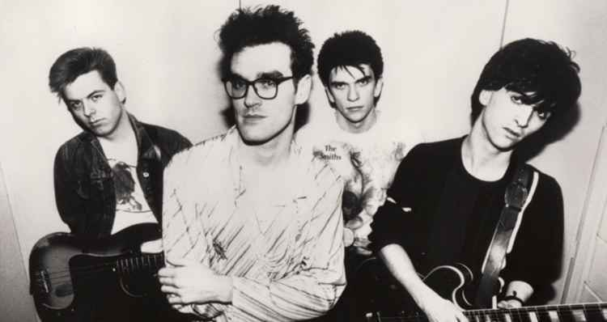

O cenário pós-punk britânico no início dos anos 80 fez surgir uma das bandas de rock mais brilhantes que unia com perfeição a simplicidade e harmonia da guitarra, uma voz inconfundível, com letras que falavam de política com um humor ácido ou uma sensibilidade incomum sobre os conflitos da alma. The Smiths foi uma banda que durou pouco mais de cinco anos mas o seu legado musical e poético influencia bandas até hoje.

A velha Manchester na Inglaterra passava por uma fase de decadência após quase dois séculos de intensa industrialização e o desemprego assolava a maior parte da população operária. A falta de perspectiva, principalmente nos jovens era extremamente grande. Foi nesse contexto que surgiu The Smiths. Um guitarrista brilhante de descendência irlandesa, nascido em Manchester procurava por outras pessoas para montar uma banda. John Martin Maher (Johnny Marr) trabalhava numa loja de roupas chamada X Clothes em 1982. Desde os tempos da escola, ele tocava guitarra brilhantemente com seu amigo de infância Andy Rourke (baixista) em sucessivas bandas que soavam como o rock norte americano: Tom Petty e Neil Young em particular. Porém após algumas tentativas frustadas, ainda faltava um cantor decente
Então John lembrou-se de uma pessoa que havia encontrado por um breve momento num show da Patti Smith, anos atrás, quando ele tinha apenas 15 anos. Era o mesmo rapaz que estava um dia numa banda chamada The Nosebleeds junto com o guitarrista Billy Duff (depois pertenceu à banda The Cult) e que escrevia letras particularmente incomuns. Tanto John como esse cantor tinham um amigo em comum, Steven Pomfret que incentivou John a procurá-lo. Então, em maio de 1982, John Martin Maher de Wythenshawe, pegou um ônibus até a King’s Road, Stretford e bateu a porta de número 384. E encontrou Steven Patrick Morrissey que assim como Maher, de descendência irlandesa nascido em 22 de maio de 1959, Manchester. Mergulhado em livros de Oscar Wilde e filmes de James Dean, seu gosto musical caminhava por rock’n’ roll dos anos 50 (como Elvis Presley), bandas de garotas dos anos 60 (The Marvelettes, The Cookies, Sandie Shaw) e bandas glam rock dos anos 70 (T Rex, Sparks, Bowie) e punk (New York Dolls, Patti Smiths, Buzzcocks).